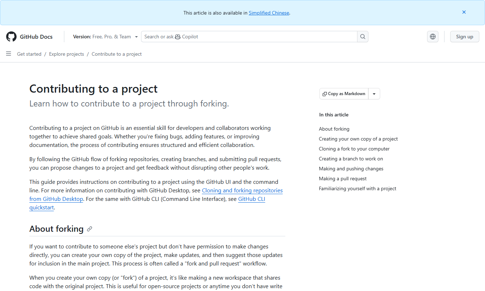
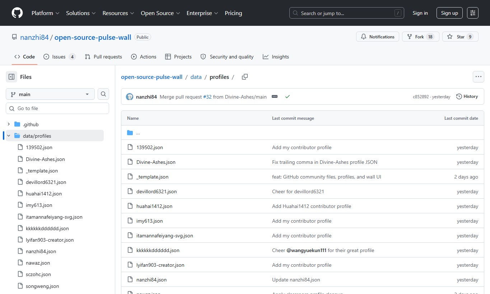
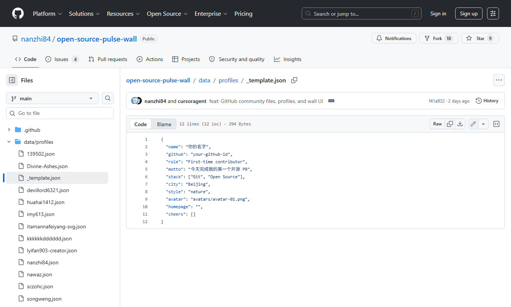
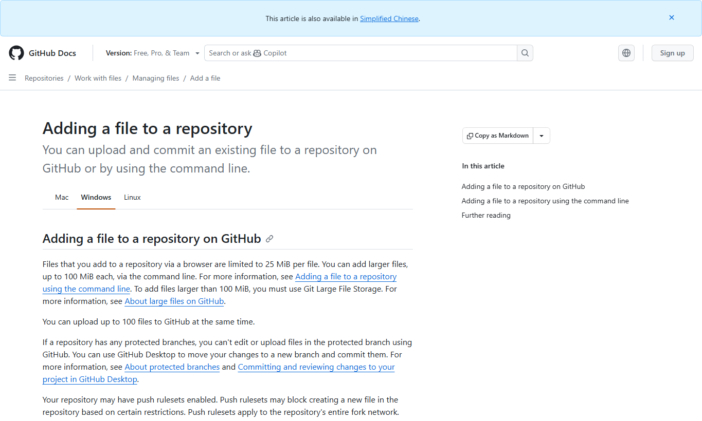
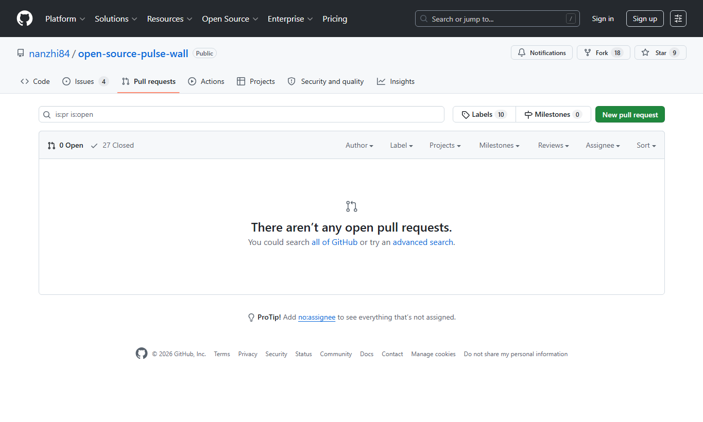

`name`
你的名字或昵称。
这一页把 README 里的贡献流程拆成课堂步骤。你只需要跟着做：Fork 仓库，复制模板，填写 JSON，运行校验，提交 Pull Request。页面里的截图来自公开 GitHub 页面和 GitHub 官方文档，登录后的界面可能有轻微差异，但按钮位置和流程一致。
先在 GitHub 上 Fork 老师的仓库，再把自己的 Fork 克隆到本地。Fork 的意思是把课堂仓库复制一份到你的账号下，你后面的提交先进入自己的仓库。
git clone https://github.com/your-github-id/open-source-pulse-wall.git
cd open-source-pulse-wall
git remote add upstream https://github.com/nanzhi84/open-source-pulse-wall.git
不要直接在 `main` 上改。每个人都从自己的分支开始，这样老师和同学能清楚看到你改了什么，也方便开 Pull Request。
git checkout -b add-your-profile分支名可以换成 `feat/your-name-profile`，只要意思清楚即可。

复制模板文件，文件名改成你的 GitHub 用户名。比如你的 GitHub 用户名是 `octocat`，文件就应该是 `data/profiles/octocat.json`。
cp data/profiles/_template.json data/profiles/your-github-id.json

打开你复制出来的 JSON 文件，只改自己的内容。JSON 要保留英文双引号、冒号、逗号和方括号。
{
"name": "你的名字",
"github": "your-github-id",
"role": "First-time contributor",
"motto": "今天完成我的第一个开源 PR",
"stack": ["Git", "Open Source"],
"city": "Beijing",
"style": "nature",
"avatar": "avatars/avatar-01.png",
"homepage": "",
"cheers": []
}你的名字或昵称。
你的 GitHub 用户名，建议和文件名一致。
你的身份，例如 `First-time contributor`、`学生`。
一句话介绍自己，页面会展示。
技术标签数组，最多 5 个。
城市或课堂位置，可以写中文。
卡片风格：`minimal`、`nature`、`sketch`、`notebook`、`ink`、`sage`。
头像路径，例如 `avatars/avatar-01.png`，也可以用 https 图片链接。
个人主页，可留空。
先保持空数组。这个字段留给其他同学给你写寄语。
提交前先运行校验。校验通过，说明 JSON 格式和字段规则基本没问题。校验失败时，先看终端里指出的文件名和字段名。
npm run validate这个仓库不需要安装额外依赖。只要本机有 Node.js 18 或更高版本，就可以直接运行。

校验通过后，把你的 profile 文件提交到自己的分支，再推送到 GitHub。随后打开 GitHub 页面创建 Pull Request。
git add data/profiles/your-github-id.json
git commit -m "feat: add my profile"
git push origin add-your-profile回到 GitHub，通常会看到 `Compare & pull request`。如果没有看到，进入 Pull requests 页面，点击 New pull request，再选择你的分支。


PR 发出后，GitHub Actions 会自动跑校验，老师或同学会 review。需要修改时，继续在同一个分支提交，PR 会自动更新。合并后，你的卡片会出现在展示墙。

遇到问题先检查下面几项。仍然解决不了，就用仓库里的 `Question` Issue 模板提问。
JSON 对逗号很严格。最后一个字段后面不要写逗号。
文件名建议使用小写 GitHub 用户名，例如 `octocat.json`。
模板只用来复制。你的内容应该写在自己的新文件里。
base 应该是老师仓库的 `main`，不是你自己 fork 的 `main`。
提交前运行 `npm run validate`，能提前发现大多数格式问题。
第一次添加 profile 时保持 `cheers: []`。寄语留给同学来写。